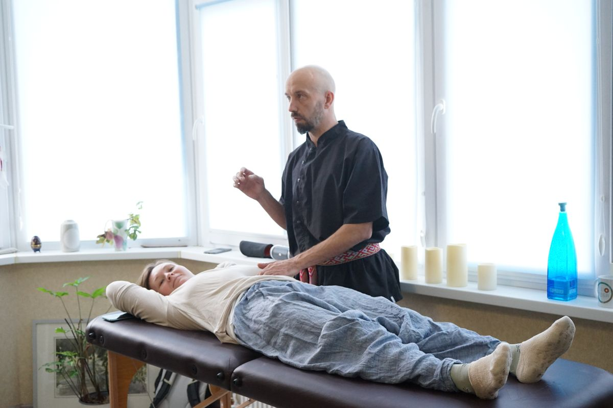
Soin énergétique
environ 1 h 50 €
Une séance globale d'harmonisation de l'énergie. Chaque soin est comme une œuvre d'art : il est unique, car pendant la séance je peux recevoir une gestuelle ou une vision en accord avec chaque personne.
Les Mains MagiquesMichael Manzano
Thérapie énergétique holistique · Soin énergétique & magnétisme à Dax
« Un soin pour le corps, un soin pour l'âme »
✨ Nouvel article Évitez de dire ces choses-là à quelqu'un pour le consoler →
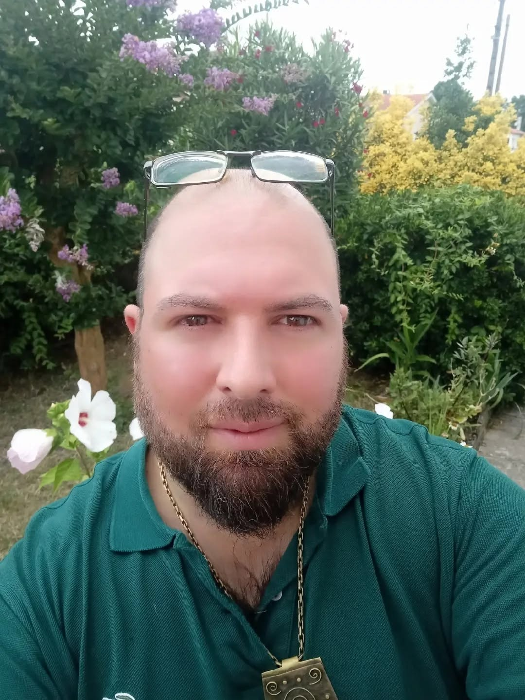
Ce don m'accompagne depuis l'enfance. Pendant des années, j'ai aidé les autres bénévolement, simplement par besoin d'aider mon prochain.
Aujourd'hui, avec plus de 20 ans d'expérience, je mets à votre service, dans mon cabinet de Dax, les compétences et les connaissances acquises au fil de ces années de magnétisme et de pratique énergétique.
Mes mains sont le prolongement de mon cœur.
Le chemin vers soi-même est le plus beau voyage.
Alors, devenez la boussole de votre cœur.
![Comment se déroule une séance ? Tout commence par un échange sincère, d'âme à âme. Vous pouvez parler librement de ce qui vous amène, sans jugement. Au fil des années, j'ai accueilli de nombreuses histoires de vie, toujours uniques. Je les considère comme un trésor confié, et tout ce qui est dit reste confidentiel. Le soin se déroule le plus souvent habillé, dans une pièce chauffée l'hiver. Le contact se fait avec votre accord : parfois à distance du corps, parfois en posant la main, en exerçant une légère pression ou en effleurant, selon ce qui est juste pour vous. J'utilise aussi mon souffle, mes mains et tout mon corps accompagne le mouvement. Par moments, je ferme les yeux pour canaliser, tout en vous laissant libre de poser une question ou de signaler une gêne. Chaque rencontre est unique et j'adapte l'accompagnement à vos ressentis et à vos limites. Dans mon approche spirituelle, ce que certaines traditions appellent « implants énergétiques » renvoie à une image de petites accroches, comme des sangsues, qui peuvent évoquer une fatigue ou un poids intérieur. Certaines personnes relient cela au « mauvais œil » ; j'accueille ce vécu sans en conclure une influence extérieure, car ces ressentis peuvent avoir de nombreuses causes. Je propose alors un travail symbolique de visualisation et de nettoyage énergétique, avec l'intention d'aider à se dégager de ces accroches et à retrouver un sentiment d'apaisement. Le cœur de ma démarche reste l'écoute, la discrétion et le respect de votre liberté, dans une démarche de bien-être qui ne remplace aucun avis, diagnostic ou traitement médical.](images/deroulement-seance.jpg)
Mon soin est énergétique, mais c'est aussi un soin de l'âme : il accompagne les blessures de l'âme et vous aide à vous reconnecter à vous-même.
À l'écoute de mon intuition, je vous offre une écoute empathique et active, et les bons mots au bon moment.
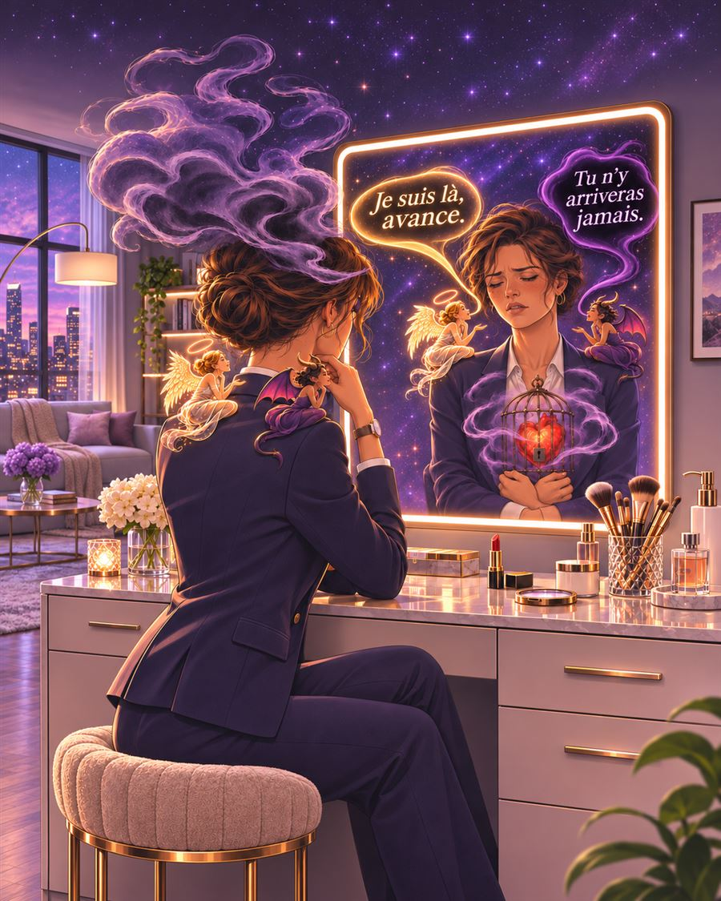
Les blessures émotionnelles se retrouvent souvent dans le corps, sous forme de tensions ou de douleurs. Grâce à mon intervention énergétique et aux techniques qui me sont propres, issues de mes initiations personnelles, j'accompagne le soulagement des douleurs, quelle que soit leur nature, avec des résultats souvent rapides. Le travail énergétique continue ensuite d'agir plusieurs jours après le soin.
Que ce soit sur le court, le moyen ou le long terme, mon accompagnement vous donne des clés pour mieux avancer et retrouver une paix intérieure.
Parce que c'est un soin global. Il ne s'adresse pas seulement à l'énergie du corps : il fait aussi appel à votre équipe invisible, qui transmet parfois des messages et aide à libérer des blocages émotionnels.
Mon énergie médiumique peut parfois guider l'échange et cibler la source de vos blocages.
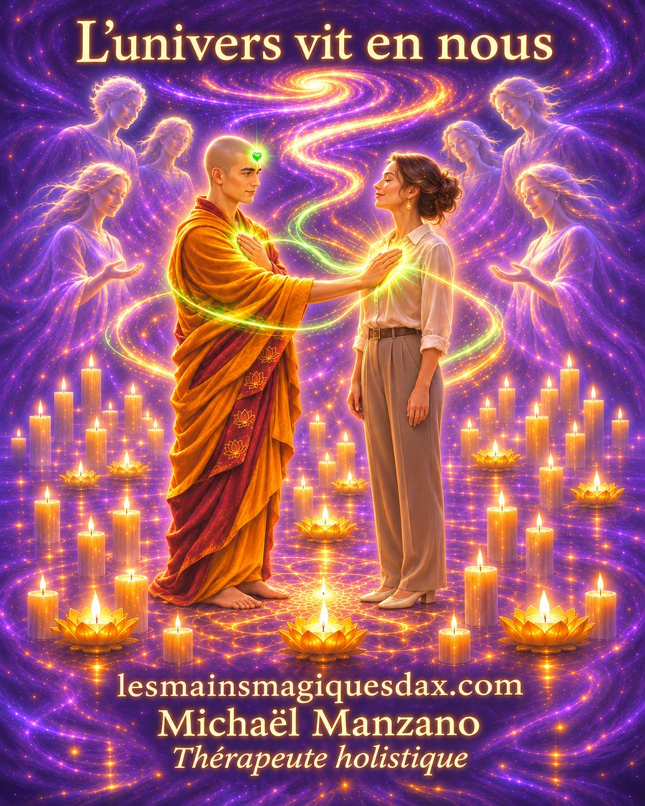

environ 1 h 50 €
Une séance globale d'harmonisation de l'énergie. Chaque soin est comme une œuvre d'art : il est unique, car pendant la séance je peux recevoir une gestuelle ou une vision en accord avec chaque personne.
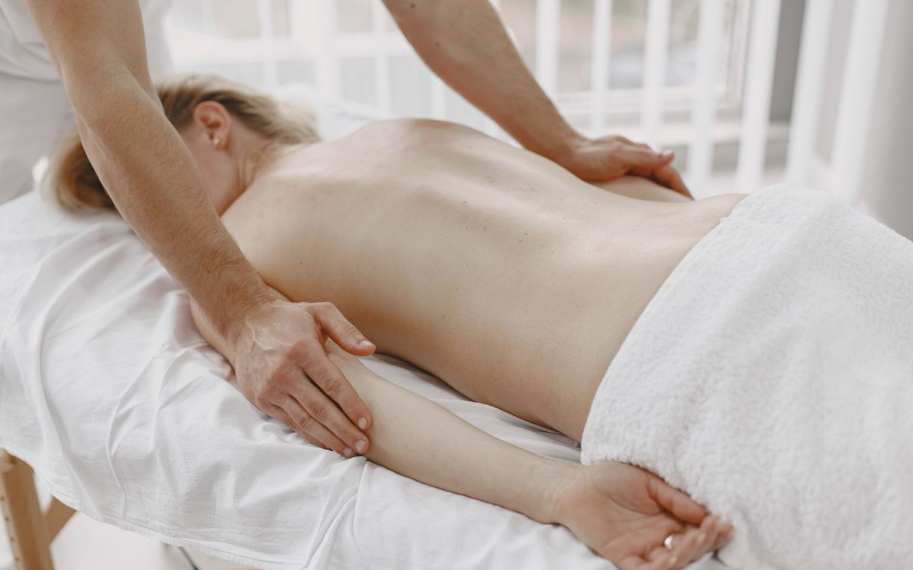
environ 1 h 65 €
Un massage drainant et profond, réalisé en douceur, qui vous enveloppe dans un cocon de nuages. Aux huiles essentielles de lavande, de CBD et de camphre, il est associé au travail énergétique.
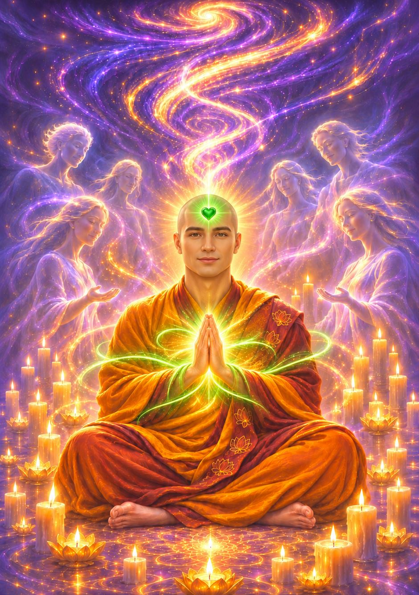
🌍 Partout dans le monde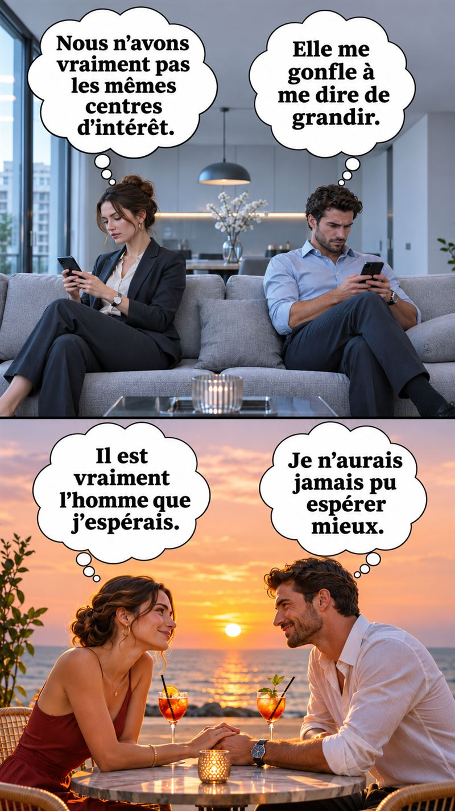
💞 Pour deuxDeux formules pour vous deux :
Un soin énergétique pour vous deux, qui est en même temps une harmonisation du couple. Le soin s'accompagne d'échanges pour vous aider à retrouver la paix au sein de votre couple : j'ai souvent été, dans ma vie, le médiateur de nombreux couples.
Vivre sous le même toit et dormir côte à côte, c'est mélanger nos auras : les murs transpirent nos énergies, et c'est parfois très lourd à porter. Le dialogue se rompt alors dans le couple. Une personne extérieure et bienveillante peut vous accompagner vers la réconciliation et la paix au sein du foyer.
L'homme et la femme ne viennent pas de la même planète : nous n'avons pas les mêmes codes. Mais l'important, c'est le dialogue, dans la plus grande sincérité, sans masque, en osant sortir de sa zone de confort.
Travailler en binôme harmonise vos deux énergies.
Pour les personnes qui n'en ont pas les moyens, je reste ouvert au don libre.
Les soins énergétiques ne remplacent en aucun cas un avis, un diagnostic ou un traitement médical.
🌍 Par visioconférence
« L'univers vit en nous. »
Où que vous soyez, je peux aussi vous accompagner à distance, par visioconférence. J'ai déjà une belle expérience de ces soins : j'ai soulagé des personnes jusqu'à l'île de la Réunion, en Afrique, au Québec et en Amérique du Sud.
Le soin demande une petite préparation : je vous guide pas à pas dans les gestes que vous allez vous-même poser sur votre corps. Il s'appuie sur le pouvoir d'auto-guérison qui est en vous et, associé à mon énergie, il vous apporte un profond mieux-être.
Une forme d'auto-soin guidé, avec une visualisation de voyage chamanique : au centre de la Terre et dans la galaxie, avec de vrais ressentis corporels. C'est une reconnexion à votre divinité, et la compréhension que nous sommes tous interconnectés.
Renseignements et rendez-vous :
07 74 63 23 71
✦ Initiations ✦
« Je vous accompagne à devenir le capitaine de votre vaisseau, pour votre voyage intérieur. »
✦ Initiations pour débutants ✦
Chacun de nous porte en lui une lumière énergétique. Si vous ressentez depuis longtemps des prédispositions, elles sont bien là, simplement endormies : il suffit de les réactiver.
Au cours de cette initiation, je vous offre une harmonisation et une activation de vos chakras, des exercices, des passes énergétiques, ainsi que des échanges autour de la spiritualité et de la magie. C'est un cours unique d'1 h 30.
Nous ne sommes pas tous destinés à en faire notre métier, et l'on ne devient pas magnétiseur en une heure : c'est une initiation, pour découvrir votre propre pouvoir énergétique et commencer à soulager vos proches par vous-même. Le but n'est pas que vous dépendiez de moi, mais que vous deveniez autonome, au fil de votre évolution.
La magie la plus pure et la plus belle : celle qui n'a pas besoin de formules magiques tirées des livres. La magie de la vie, pour manifester les synchronicités que vous allez attirer.
C'est un cours unique d'1 h 30, au cours duquel je vous dévoile une partie de mes secrets, afin que vous développiez votre propre magie.
Renseignements et rendez-vous :
07 74 63 23 71
Vous avez reçu un soin ? Votre expérience peut aider d'autres personnes à franchir le pas. Merci du fond du cœur pour vos mots.
Avis Google
✨ Il y a des rencontres qui ne doivent rien au hasard… ✨
Mickaël est une belle âme, un être doté d'une sensibilité et d'une énergie particulières. À travers ses mains, son magnétisme et ses massages, il partage bien plus qu'un simple moment de détente : une véritable parenthèse de reconnexion, d'apaisement et d'harmonie.
Son univers est empreint de bienveillance, de spiritualité et de magie. Il possède ce petit quelque chose d'unique qui ne s'explique pas toujours avec des mots, mais qui se ressent.
Une belle personne, des mains en or et une âme lumineuse. Je vous invite à découvrir son univers, vous pourriez être agréablement surpris. 🦋🔮💗🙏🏼🌈
★★★★★
J'ai des douleurs au dos depuis des années. J'étais bloquée au niveau de l'épaule : une tendinite m'empêchait de lever le bras sans ressentir de douleurs atroces. Michael a réussi à me débloquer le bras et l'épaule, je peux enfin reprendre une vie normale. Ensuite, pour mon hernie discale qui est chronique, je le vois tous les 10 jours pour soulager cette zone de douleurs.
Passer entre les mains de Michael, c'est magique : il dégage une véritable énergie, il est très doux et puissant lors des massages aux huiles essentielles, qui agissent sur la durée de la journée, et j'ai récupéré un meilleur sommeil. Ses conseils sont toujours précieux et bienveillants.
C'est une personne chaleureuse qui donne beaucoup de sa lumière autour de lui. Il a changé ma vie après des années de souffrances. Il est un homme d'une humanité rare.
Avis Resalib
★★★★★
Écoute & bienveillance
Curiste, j'ai fait appel à Michael pour des douleurs diverses (dos, cervicales, thyroïde, hanches, tendinite) : en gros, une multipathologie. Outre la bienveillance, l'écoute active et les échanges ouverts avec Michael, il a réussi à débloquer et dénouer plusieurs névralgies ! Je suis repartie soulagée, avec 30 minutes de marche sans douleur au bas du dos.
J'ai bénéficié de soins de massage et de magnétisme efficaces. Je ne tarirai pas d'éloges à son sujet. Avec toute ma gratitude et mon plus profond respect 🙏🏾
Avis Resalib
★★★★★
Vu le 18 juillet. Michael inspire la confiance et la bienveillance. Je l'ai consulté pour des problèmes neurologiques, ça a fait du bien, je pense réitérer plusieurs séances. Je recommande vivement.
Avis Resalib
★★★★★
Pour ma part, j'ai trouvé Michael agréable et efficace. Je n'hésiterai pas à refaire une séance, étant douloureuse depuis plusieurs années. J'ai déjà fait des séances avec d'autres personnes, et je lui ferai confiance à nouveau si le besoin se fait à nouveau ressentir. Merci à lui.
Avis Resalib
★★★★★
Michael est une personne bienveillante, à l'écoute, douce, et surtout il permet à la personne en demande de croire que les clés de son accomplissement sont en elle-même.
Je devais être opérée d'un kyste au pied. Je suis danseuse, alors très difficile pour moi de me mettre au repos forcé. J'ai connu Michael ; je suis du Grand Est. Nous avons fait le soin à distance : il était dans la nature et moi à mon bureau. Le pouvoir de la visualisation m'a fait ressentir adossée au même arbre que lui. Michael m'a accompagnée afin que je fasse le soin moi-même, à travers nos énergies en symbiose. Un grand moment.
Plus de kyste, pas d'opération, et une compréhension que nous avons tous en nous les clés de l'autoguérison. C'était il y a 9 ans ! Merci ! Les yeux fermés, en pleine confiance, allez-y !
Avis Resalib
★★★★★
Magnétiseur comme magicien. Merci Mika pour tes soins. Je recommande sans hésiter. Allez-y les yeux fermés.
Avis Resalib
★★★★★
Mickaël, c'est plus qu'un magnétiseur. C'est une belle âme, un ami cher, quelqu'un qui sait écouter sans juger et qui apporte un vrai apaisement rien que par sa présence. J'ai vu de mes propres yeux combien il peut faire du bien, soulager les douleurs, alléger les cœurs, remettre en mouvement ce qui était bloqué.
Il travaille avec le cœur, avec sincérité, et ça se sent. Je suis fière de le connaître, et encore plus de pouvoir dire que c'est mon ami. Si vous cherchez une aide profonde, un vrai soutien énergétique et humain, vous êtes entre de très bonnes mains. 🙏🏼❤️
Avis Resalib
★★★★★
Très bon magnétiseur, en présentiel ou à distance. Il pratique depuis des années, il a une très forte énergie et beaucoup d'empathie. À ma connaissance, il a soulagé beaucoup de personnes avec des pathologies lourdes. C'est une des rares personnes à venir en aide aux gens avec autant de cœur. 🙏😊💚
Ces témoignages sont retranscrits tels que leurs auteurs, bénéficiaires des soins apportés par Michael Manzano, thérapeute holistique, les ont écrits. Les soins énergétiques sont complémentaires : ils ne remplacent en aucun cas un avis, un diagnostic ou un traitement médical, et ne doivent jamais conduire à arrêter un traitement en cours.
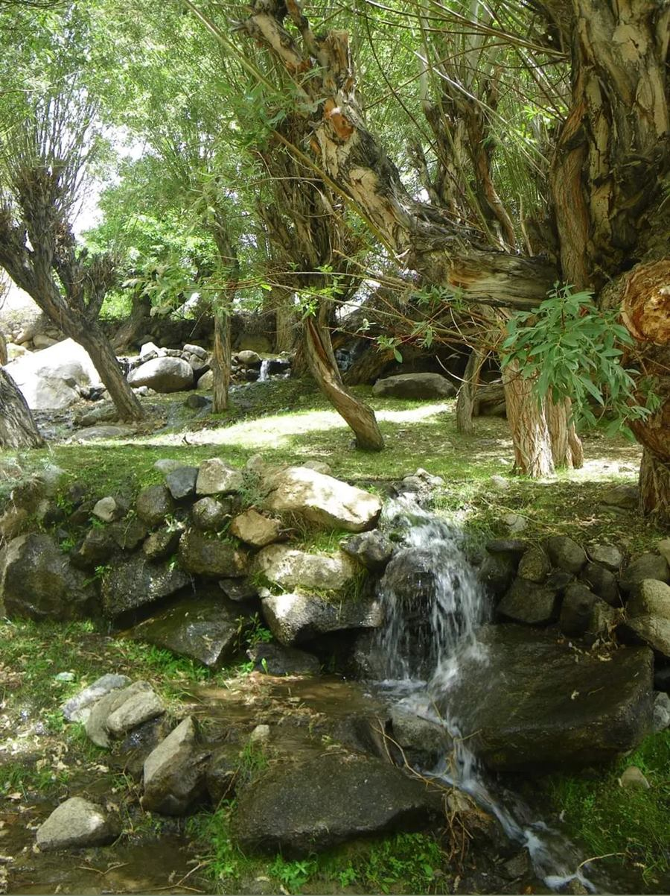
Le monde des esprits : au-delà des apparences
Les esprits vivent partout dans la nature. Saurez-vous voir l'esprit caché dans la cascade ?
Lire l'article →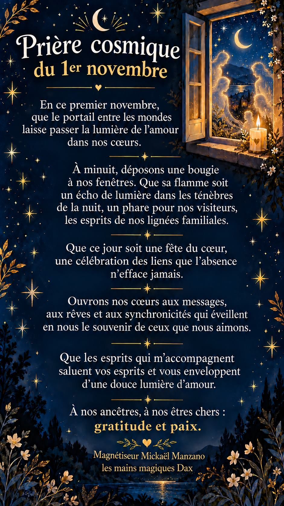
Prière cosmique du 1er novembre
Allumer une bougie, ouvrir son cœur, et honorer ceux que l'on aime.
Lire la prière →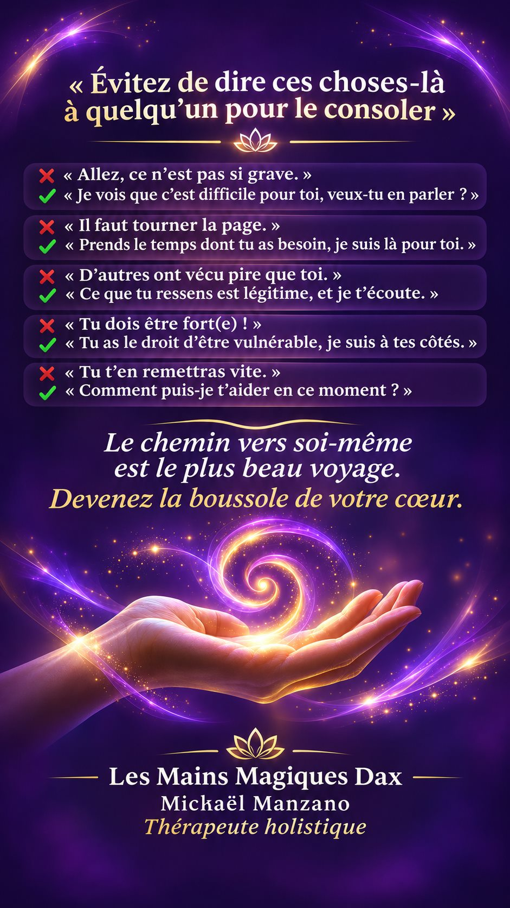
Évitez de dire ces choses-là à quelqu'un pour le consoler
Cinq phrases qui blessent sans le vouloir, et ce qu'il vaut mieux dire à la place.
Lire l'article →Le soin énergétique est une séance globale d'harmonisation de l'énergie, d'environ une heure. Chaque soin est unique : pendant la séance, je peux recevoir une gestuelle ou une vision en accord avec chaque personne. C'est aussi un soin de l'âme, qui aide à libérer des blocages émotionnels et à se reconnecter à soi-même.
Pour le soulagement des douleurs, quelle que soit leur nature, et des tensions installées dans le corps, mais aussi pour accompagner les blessures émotionnelles. Ces blessures se retrouvent souvent dans le corps : le soin s'adresse aux deux.
Les résultats sont souvent rapides. Le travail énergétique continue ensuite d'agir plusieurs jours après le soin.
Le soin énergétique est une séance d'harmonisation de l'énergie. Le massage énergétique est un massage drainant et profond, réalisé en douceur aux huiles essentielles de lavande, de CBD et de camphre, et associé au travail énergétique.
Le soin énergétique coûte 50 € et le massage énergétique 65 €, pour une séance d'environ une heure. À distance, par visioconférence, le soin pour les douleurs coûte 40 € pour 1 h, et le soin d'activation de la Kundalini 80 €. Les initiations pour débutants, à l'activation de l'énergie et à la magie blanche, sont chacune un cours unique d'1 h 30, à 100 €. Pour les couples, le soin simple coûte 80 € pour les deux (1 h 30), et la formule soin, médiation et harmonisation du foyer 140 € pour les deux (2 h). Pour les personnes qui n'en ont pas les moyens, je reste ouvert au don libre.
Oui, par visioconférence, où que vous soyez : j'ai déjà soulagé des personnes jusqu'à l'île de la Réunion, en Afrique, au Québec et en Amérique du Sud. Je propose deux soins à distance : le soin pour les douleurs, où je vous guide pas à pas dans les gestes à poser sur vous, et le soin d'activation de la Kundalini, un auto-soin guidé avec une visualisation de voyage chamanique, de reconnexion à votre divinité.
Par téléphone, au 07 74 63 23 71. Le cabinet se trouve au 3 rue des Peupliers, 40100 Dax.
Non. Les soins énergétiques ne remplacent en aucun cas un avis, un diagnostic ou un traitement médical, et n'impliquent l'arrêt d'aucun traitement en cours. En cas de problème de santé, consultez un médecin.
Je vous reçois au 3 rue des Peupliers, à Dax, dans un lieu chaleureux et coloré, propice à la détente et au lâcher-prise.
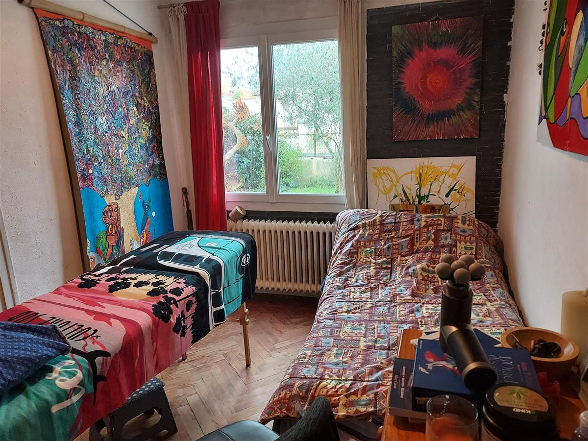
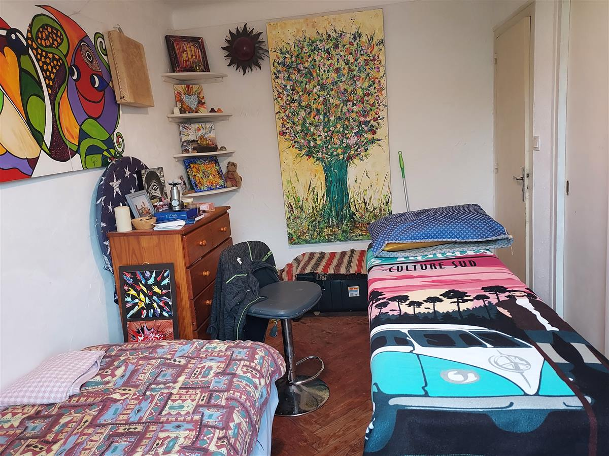
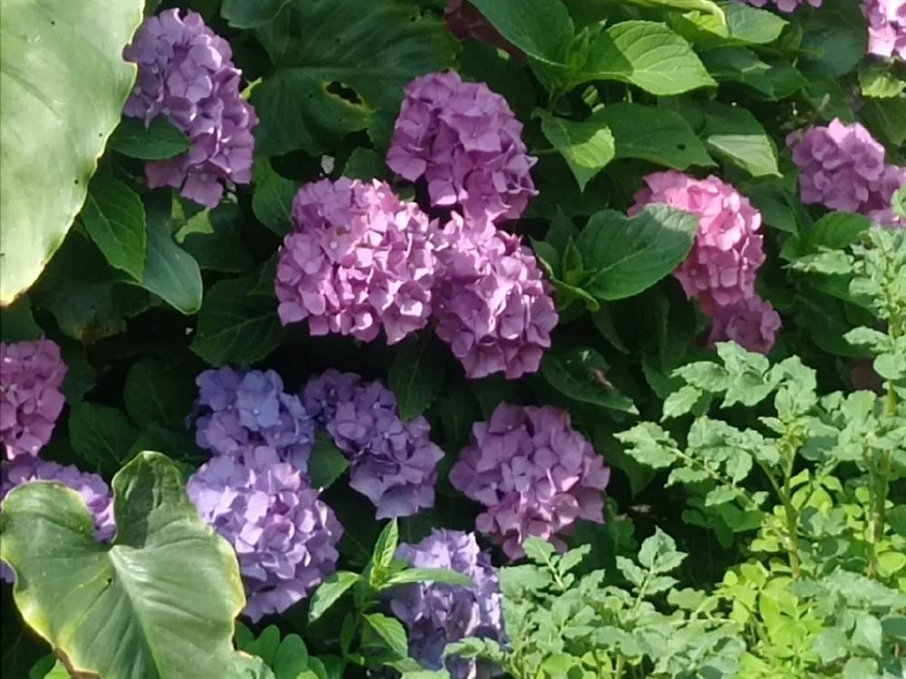
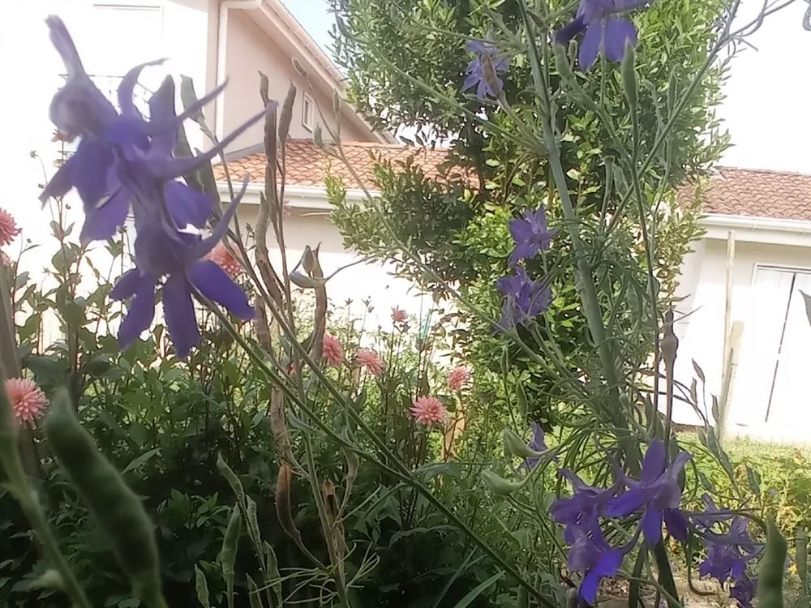
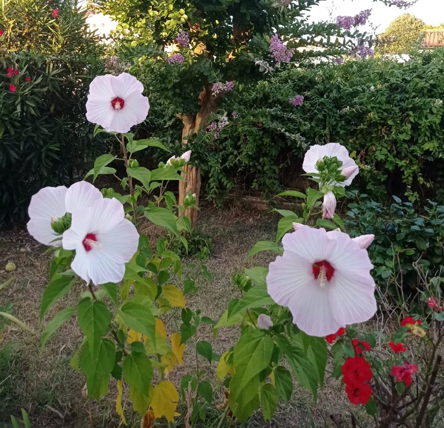
La prise de rendez-vous se fait par téléphone :
📞 07 74 63 23 71Adresse du cabinet
3 rue des PeupliersSuivez-moi : Facebook